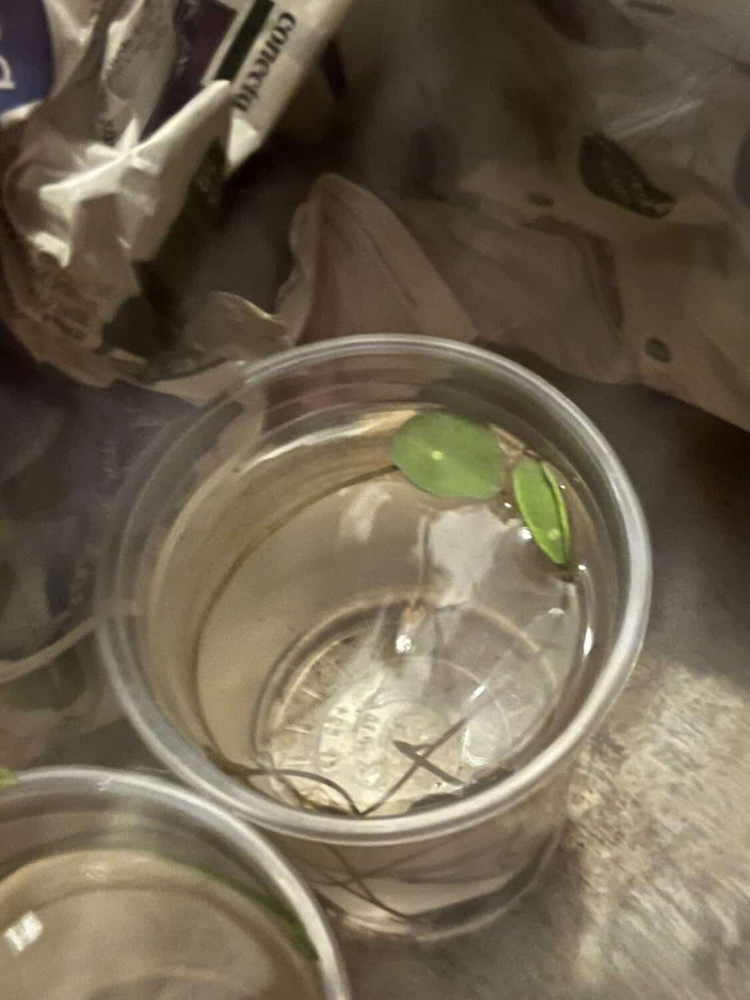
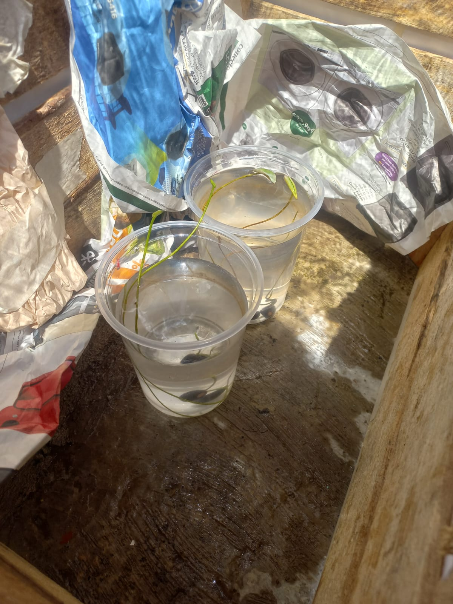

Loto
regalo para mi novia
Melodía Actual
TRANSMITIENDO...
17 de mayo 2026 8pm
Día 11: LA HOJITAAAAAA

ya salio su hojita.
17 DE MAYO, 2026
Día |11: Primeras hojas

YA SALIERON SUS HOJITAS.
4 DE MAYO, 2026
Día 1: La meta
META